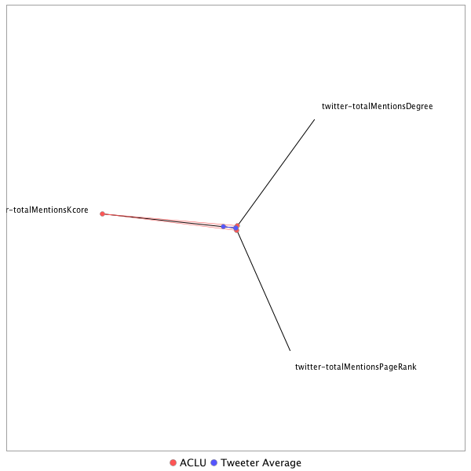

This tweeter has been identified as a super spreader. Its target audience and hashtag and word usage are analyzed below.
Basic Statistics
Number of direct followers 1.18624e+06 The peak number of followers that the tweeter had during any time period. Number of retweeters 71 Number of agents that retweeted the key influencer. Number of secondary followers 1880575 The sum of the followers of those who retweeted the key influencer.
Measure Values of Super Spreaders node versus Tweeter Average
This compares the measure values of the key influencer with the average values across all tweeters. For each measure line, the center-point means zero and the end-point means the maximum score across all tweeters.

Where was the influencer?
The agent is not recorded as being in any locations. Either he tweeted without geo-tags or we have no information about the tweets he sent.
The agent and retweeters were in 1 different locations.

What hashtags did the influencer use?
This displays the top ranked hashtags that the influencer and its retweeters used.
Rank hashtag Count 1 Trump 325 2 BREAKING 266 3 adopt 220 4 Comey 171 5 AdoptDontShop 170 6 dog 169 7 mtal 143 8 AHCA 138 9 Russia 135 10 ge2017 132 11 ParisAgreement 130 12 Qatar 121 13 VAGov 119 14 NYC 104 15 WrongChoiceAct 103 16 cat 103 17 GA06 97 18 netneutrality 95 19 rescue 88 20 Syria 81 21 foster 79 22 ComeyHearing 72 23 Manchester 70 24 Battle4TheNet 67 25 climatechange 67 26 RedactedTonight 66 27 txlege 66 28 TheBachelorette 63 29 China 62 30 healthcare 62 31 fakenews 60 32 CATS 59 33 trumprussia 58 34 covfefe 56 35 ComeyFiring 55 36 Iran 54 37 SCOTUS 54 38 TrumpCare 53 39 FBIDirector 49 40 MTpol 49 41 Atlanta 47 42 ComeyDay 47 43 ISIS 47 44 dogs 47 45 Chicago 46 46 MAGA 46 47 SethRich 46 48 GrenfellTower 45 49 Israel 45 50 MemorialDay 45 51 yemen 43 52 ComeyTestimony 42 53 SC05 40 54 potusabroad 40 55 US 39 56 Saudi 38 57 sallyyates 38 58 CA 37 59 washingtondc 36 60 LondonBridge 35 61 FBI 34 62 NATO 34 63 DC 32 64 OTD 32 65 AFP 31 66 ParisAccord 31 67 ShameonNBC 31 68 dogsoftwitter 31 69 kentuckyderby 31 70 Obamacare 30 71 Turkey 30 72 FF 29 73 JamesComey 29 74 NewYork 29 75 TBT 29 76 MarchForTruth 28 77 PLEDGE 28 78 SessionsHearing 28 79 ksleg 28 80 onthisday 28 81 tomorrowspaperstoday 27 82 Florida 26 83 ParisClimateDeal 26 84 Kitty 25 85 NorthKorea 25 86 Putin 25 87 SaudiArabia 25 88 GOP 24 89 LOVE 24 90 WonderWoman 24 91 Alexandria 23 92 Germany 23 93 ManchesterBombing 23 94 MetGala 23 95 NewYorkCity 23 96 Russian 23 97 Tillerson 23 98 TrumpBudget 23 99 ICYMI 22 100 Minneapolis 22
Tweet List
This displays all of the tweets of the influencer ordered from earliest to latest. Click on a tweet to see its status in Twitter.
Number Tweet ID Date Message 1 862315616761458688 2017-05-10 10:37:18-04 Here's @ACLU_WV 's full statement on the arrest of a reporter for asking HHS Secretary Price about the health care bill. https://t.co/TURx91BOzA 2 860248269208858625 2017-05-04 17:42:24-04 We thought we'd have to sue Trump today. But it turned out the order signing was an elaborate photo-op with no discernible policy outcome. 3 860218371299823616 2017-05-04 15:43:36-04 After an EO singling out reproductive care and a bill punishing pregnancy and sexual assault, it's clear today has been an attack on women. 4 860257179848323073 2017-05-04 18:17:49-04 Donald Trump and anti-women’s health Members of Congress have turned being a women into a pre-existing condition. https://t.co/x3aezvKhql 5 859470444524699652 2017-05-02 14:11:36-04 VERIFIED: This is flat out untrue. https://t.co/BwuvhBHyYz 6 859484677761114112 2017-05-02 15:08:10-04 And if President Trump signs an order that would allow religion to be used as an excuse to discriminate, we will sue. #SeeYouInCourtAgain https://t.co/I9f259RSXP 7 862762577088176128 2017-05-11 16:13:22-04 BREAKING: We just demanded the Trump administration release its “evidence” on voter fraud https://t.co/RShcyCenng 8 860249446222897154 2017-05-04 17:47:05-04 In the event that this order triggers any official government action at all, we will see Trump in court, again. https://t.co/GbIv0Rouwt 9 864602691993047040 2017-05-16 18:05:19-04 If @realDonaldTrump in fact attempted to end an ongoing FBI investigation, that would constitute obstruction of justice. https://t.co/FMhl8gvWEJ 10 866104031655202816 2017-05-20 21:31:07-04 So this happened https://t.co/oGuh0SjQkr 11 860173161362579457 2017-05-04 12:43:57-04 The actions taken today are a broadside to our country’s long-standing commitment to the separation of church and state. 12 860172752564649986 2017-05-04 12:42:20-04 .@POTUS Today President Trump signed an executive order allowing religious orgs to endorse political candidates and expand participation in politics 13 860172892688064514 2017-05-04 12:42:53-04 .@POTUS Today's executive order also enables private employers to use religion as a pretext to deny reproductive health care to their employees. 14 874312023240306688 2017-06-12 13:06:44-04 BREAKING: 9th circuit appeals court rules against Muslim ban. Writes: “Immigration, even for the president, is not a one-person show.” 15 874696339862552577 2017-06-13 14:33:53-04 Preventing the press from informing the public about the workings of their own government goes against the core values of our democracy. https://t.co/JJAhzRrmcV 16 872066120299229186 2017-06-06 08:22:19-04 Here at the ACLU, we think you should keep using social media. https://t.co/KjM62aKGuL 17 871734797126836224 2017-06-05 10:25:46-04 BREAKING: SCOTUS accepts major cell phone location case — chance to affirm the 4th Amendment applies to modern tech https://t.co/zPNev3dNx4 18 870403082659667968 2017-06-01 18:14:00-04 The purpose of child pornography laws is to prevent minors from being abused, not criminalize young people for sexual experimentation. https://t.co/2Nvbhs3u3N 19 871905456788209666 2017-06-05 21:43:54-04 Another receipt to save for when we see you in court. https://t.co/7WMe0XMkrS 20 871160314070523905 2017-06-03 20:22:58-04 Glad we both agree the ban is a ban. https://t.co/p1qXkffyIL 21 871708428728750080 2017-06-05 08:40:59-04 To recap, @realDonaldTrump: -confirmed the ban is a BAN -noted Muslim ban 2.0 is a "watered down, politically correct version" of original https://t.co/olVg2HzKmS 22 869228621189263360 2017-05-29 12:27:07-04 Alabama can no longer impose the “civil death” of felon disenfranchisement on citizens with certain drug convictions https://t.co/yDOklx6sV3 23 862411405445783552 2017-05-10 16:57:56-04 It does not. In West Virginia and the rest of America, First Amendment rights are not confined to a press conference. https://t.co/BJin6heQXs 24 862127518932979712 2017-05-09 22:09:52-04 Live: West Virginia reporter was arrested for trying to ask Secretary Price a question. https://t.co/ESuVtdgj6i 25 864916132695822337 2017-05-17 14:50:50-04 BREAKING: We just filed to get Comey's Trump memo. Americans must know the truth about what happened. https://t.co/CVtOpclqpu 26 867802203829829632 2017-05-25 13:59:03-04 BREAKING: We won in 4th circuit Muslim ban case! More to come. 27 860208748270419968 2017-05-04 15:05:22-04 So much for promises. https://t.co/V5AjqMN4Eg 28 861223567157059584 2017-05-07 10:17:53-04 Not only are ACLU lawyers the new rock stars, but we also employ @PinkyWeitzman, who is a literal rock star. https://t.co/T4xVMkYc3s 29 859492464478097408 2017-05-02 15:39:06-04 Police body cameras are for police accountability, not this https://t.co/100AOx8hNn via @theintercept 30 859926531879178240 2017-05-03 20:23:56-04 You have freedom to practice your religious beliefs. You don't have right to discriminate against others based on those beliefs. 31 875719870859665410 2017-06-16 10:21:01-04 This victory is a result of all Dreamers who bravely put themselves out there and let their voices be heard. https://t.co/DuNmUcb3yG 32 876091803526733824 2017-06-17 10:58:57-04 The ACLU will not be scaling back https://t.co/K9MpLo0NQH 33 866827020726095876 2017-05-22 21:24:01-04 "A politicized FBI can do great damage to both our democracy and our security," warns a former FBI whistleblower. https://t.co/lFzYjItUrn 34 864840162802630656 2017-05-17 09:48:57-04 Chelsea Manning is now a free woman, and we couldn’t be happier about it. https://t.co/QBbZVe695x 35 863027547508027392 2017-05-12 09:46:16-04 Jeff Sessions wants to resurrect the failed War on Drugs, which destroyed families. We won't go back. https://t.co/m0Ztr3P1K3 36 860248430140149760 2017-05-04 17:43:03-04 Trump’s assertion that he wished to ‘totally destroy’ the Johnson Amendment with this order has proven to be a textbook case of "fake news." 37 874641891035418627 2017-06-13 10:57:31-04 Our record in court against Kobach's voter suppression agenda speaks for itself. ACLU: 4 Kobach: 0 https://t.co/5je8CwSZ47 38 871788779308294147 2017-06-05 14:00:16-04 Yes, we may incorporate @realDonaldTrump's tweets about the ban into our Supreme Court argument. 39 871702991274987524 2017-06-05 08:19:23-04 Thanks for all the tags. Yes, we saw this. https://t.co/mzLLE7g18w 40 865291903457124357 2017-05-18 15:44:00-04 "I am not going to shoot you, brother" - Officer Mader to Black man whose life he protected. Mader was fired for it. https://t.co/uYSnAOzh4w 41 862756706962591744 2017-05-11 15:50:02-04 Kris Kobach, vice chair of "Election Integrity" commission, has been sued by the ACLU for voter suppression 4 times. Our record is 4-0. https://t.co/FuXQiheeXr 42 864181349996998656 2017-05-15 14:11:04-04 BREAKING: We've filed a demand with the FBI & DOJ for all docs on Comey’s firing. The truth needs to come out. https://t.co/u2IB03z2rl 43 863547331563712519 2017-05-13 20:11:42-04 Actually, in America, we don't have to worship God if we don't want to. https://t.co/0mTDVyfI0E 44 862687713568456705 2017-05-11 11:15:53-04 We're not calling for President Trump's impeachment yet, but the parallels to Nixon are striking and deserve further investigation. https://t.co/mj4csRSHpQ 45 862075620905414656 2017-05-09 18:43:39-04 President Trump’s dismissal of a sitting FBI director rings alarm bells for our system of checks and balances. https://t.co/VSBOSM1QiF 46 861970450024468481 2017-05-09 11:45:44-04 Those traveling to the state of Texas should anticipate possible violations of their constitutional rights. #SB4 https://t.co/owa92clhEy 47 874380566262673408 2017-06-12 17:39:06-04 Holocaust survivor delivers scathing testimony about ICE arrests https://t.co/aVAWZizM0o https://t.co/kUQjHiqqzh